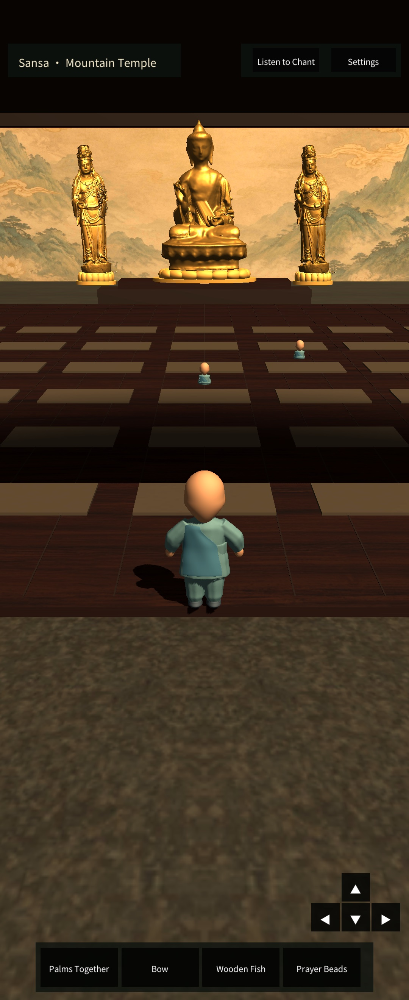
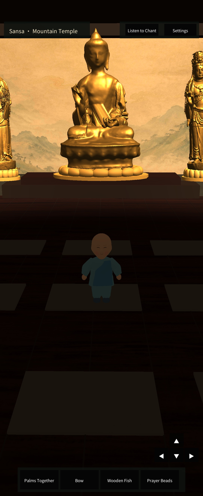

목어
맑은 울림을 직접 두드리며 나만의 속도로 잠시 쉬어 갑니다.
온라인 사찰 게임 · Google Play에서 이용 가능
Quiet Temple: Wooden Fish는 목어를 두드리고 염주를 돌리며 다른 방문자와 조용한 시간을 나누는 3D 온라인 사찰 게임입니다.
간단한 수행, 나만의 리듬
맑은 울림을 직접 두드리며 나만의 속도로 잠시 쉬어 갑니다.
염주를 한 알씩 돌리며 반복되는 움직임에 집중합니다.
공유 사찰 방에서 방문자를 만나고 예불과 향 올리기를 함께 경험합니다.
사찰의 풍경
목조 법당, 황금 불상, 산수 벽화가 있는 Android 개발 빌드의 실제 화면입니다.


Google Play
목어와 염주, 고요한 사찰의 풍경을 Android에서 경험해 보세요.